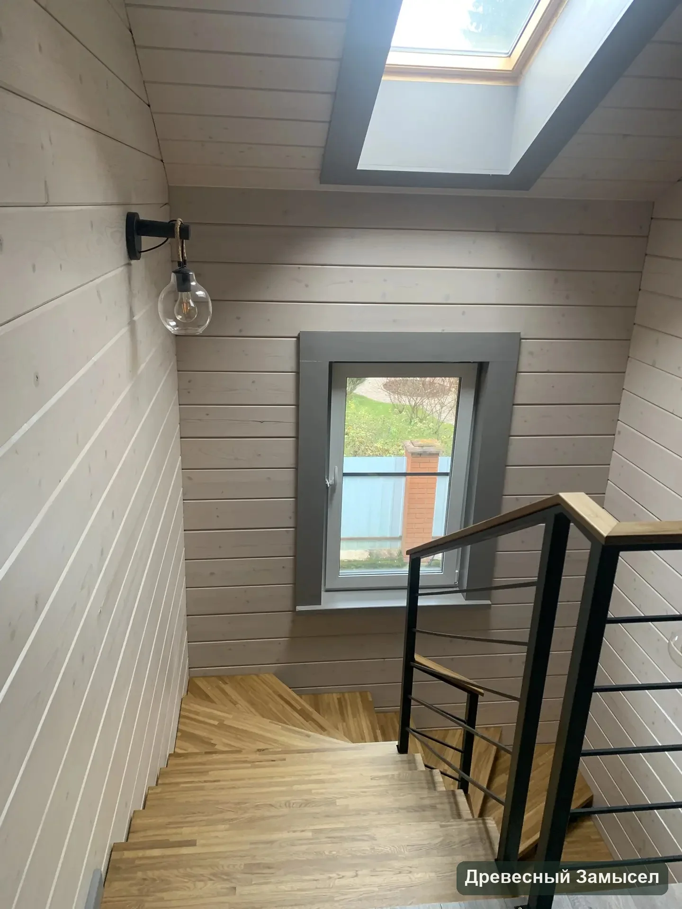

Открытая лестница с поворотом у окна
Два марша со светлыми деревянными ступенями соединены поворотными ступенями у окна. У ограждения тёмные стойки, тонкие горизонтальные перекладины и деревянный поручень.
Обсудить лестницу
Поворот и верхний марш


